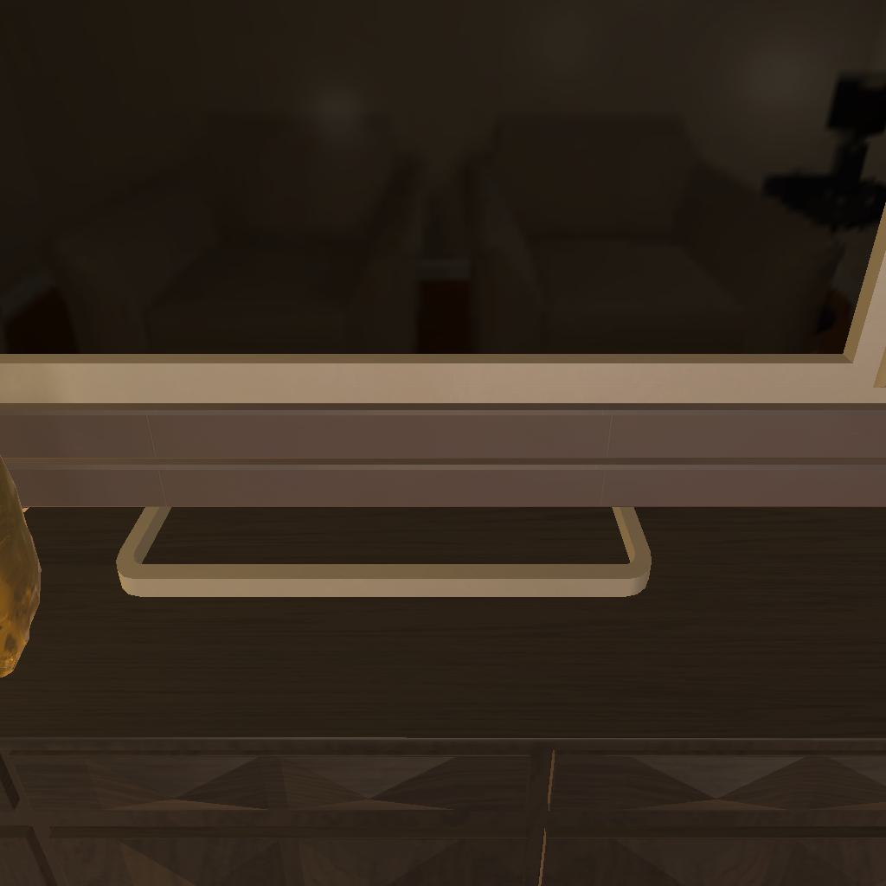

---------------------------------------------------------task: 7---------------------------------------------------------
--------------------------------------------------------------------------------------------------------------------------------------------------------------------
--------------------------------------------------------------------------------------------------------------------------------------------------------------------
Step:--------------------------------------------------------------------------10-------------------------------------------------------------------------------
----------------------------------------
VLM Prompt:
Image1:
Image2:
**Instruction**
1. Analyze the provided images to identify all visible household objects and compare the difference between images (e.h. whether the object is opened or not and taken on hand or not), focusing on those relevant to the task description "put a creditcard in coffeetable."
2. Use the analysis of images and the task hint "The agent must find an object of the desired type, pick it up, find the correct location to place it, and put it down there." to answer the question: what is the most reasonable action in the choices for the task description "put a creditcard in coffeetable"?
3. Decide and write the answer using the template: The answer is: (i): , where i is the real number. If there is no desired object in images, search every place based on **Initial Observation** to find the object. And if no one is exactly correct, choose a similar answer.
**Initial Observation**
You are in the middle of a room. Looking quickly around you, you can see armchair (1-2), dresser (1), garbagecan (1), cabinet (1-4), drawer (1-4), coffeetable (1), sidetable (1), sofa (1)
**Answer Choices**
(1): go to armchair 1
(2): go to armchair 2
(3): go to garbagecan 1
(4): go to cabinet 1
(5): go to drawer 2
(6): go to cabinet 2
(7): go to drawer 3
(8): go to cabinet 3
(9): go to drawer 4
(10): go to cabinet 4
(11): go to coffeetable 1
(12): go to sidetable 1
(13): go to sofa 1
(14): open drawer 1
(15): close drawer 1
(16): examine drawer 1
**Answer**
Let's think step by step by following the instructions.
----------------------------------------
----------------------------------------
Original Response:
Image Analysis:
In Image 1, we see a part of a coffeetable with no objects on it. In Image 2, we see a full view of the coffeetable with a golden statue and some scattered items around it, including a red credit card on the floor near the coffeetable.
Task Analysis:
Based on the task description, "put a creditcard in coffeetable," and the task hint, the agent needs to pick up the credit card and place it on the coffeetable.
From the initial observation, we know the positions of various furniture items in the room. Since we can see the credit card on the floor near the coffeetable in Image 2, the next logical step would be to pick it up.
The Answer is:
(11): go to coffeetable 1
After going to the coffeetable, the agent should pick up the credit card and then place it on the coffeetable to complete the task.
----------------------------------------
----------------------------------------
>>> Refine Original VLM Response and Get Pure Action: No action
----------------------------------------
-----------------------------------------------------------------
Running time: 12.486531496047974 seconds
Total Money: 2.819280000000001
-----------------------------------------------------------------
-----------------------------------------------------------------
Text Observation:Nothing happens.
-----------------------------------------------------------------
UNSUCCEED